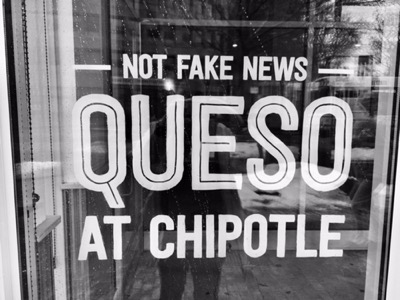

You know when the term Fake News is used to sell Chipotle that it has truly become part of American pop culture.
While it is true that on average the US has shown the greatest interest in Fake News over the last two years, it is far from the only country using the term. Fake News has been widely used across all continents and contexts in reference to different phenomenon, including misinformation, disinformation, satire or government propaganda.
This has left us with no globally accepted definition of Fake News, making it an overly general and vague term. It is entirely possible that if an American used the phrase in Uganda, they would be completely misunderstood.
Our analysis showed that fake news is not always linked with elections, with the term actively used in countries like Canada and South Africa who have not had elections in the past two years.
If we filter the data by the first quarter of 2016, before US elections, the countries showing greatest interest in the phrase were largely in Africa and South-East Asia. A cursory analysis suggests that its usage was associated more with domestic political rumours, protest movements, and government propaganda than with foreign interference in elections.
In the second quarter of 2016, the term became more popular in the UK in reference to the Brexit referendum and foreign interference.
Fast forward to the final quarter of 2017, the Philippines is the most interested country in the term. There, Fake News refers to misinformation campaigns by the President and his opponents to sway public opinion in their favour, according to the New York Times.
Using Google Trends data, we can see where 'fake news' proved popular in Google searches.
The Interest score indicates where 'fake news' was the most popular during the specified time frame. Values are calculated on a scale from 0 to 100, where 100 is the location with the most popularity as a fraction of total searches in that location, a value of 50 indicates a location which is half as popular, and a value of 0 indicates a location where the term was less than 1% as popular as the peak.
Note: A higher value means a higher proportion of all queries, not a higher absolute query count.
Sources: D3 Chart and Google Trends